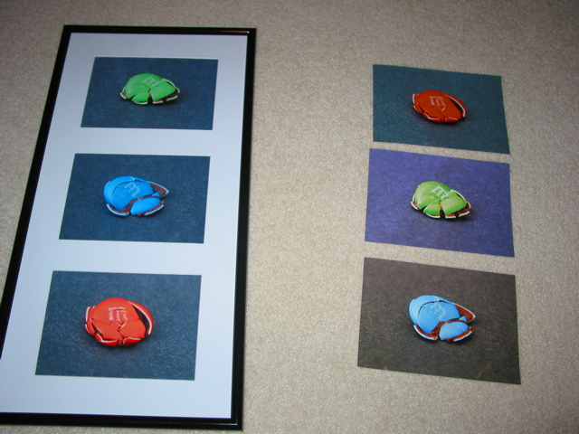

Perhaps a rather odd idea, but still a rather striking one. The idea was left in my mind one morning after waking, and held fast until the weekend. At which time I had found no good reason not to do it. So off to the store for supplies. (M&M’s and something to use as a black backdrop.)
Squishing the M&M’s was easy. Few seconds in the microwave. Squish. Minute or so in the freezer. This brings us to the first hang-up. No tripod. It is, so far as I can tell, impossible to hold a camera still in your hands for 2 seconds. Two seconds because the flash made things look wrong because the camera was too close. This hurdle was easy jumped with Technics though. (hurray for toys!) Once the camera was stable, took a bunch of pics and picked the best for each color.
Pulled the images into the computer and did some touch up. Cropped them down a bit, since I wanted the candies to take most of the frame. A little color work too, messing with the balance so the back drop was mostly consistent. Then, having no printer, I used iPhoto to get prints made. Welcome to the second hang-up.
From you to Apple to Kodak your images go. I’m not sure what they did, but they must have rebalanced each image separately before putting them on to paper. All three images had the same color background when they left my computer. All three had different color backgrounds when I got them. The poor green M&M was the worst, its background was lavender. How it got to be lavender from black I don’t really understand. In any case, these were a loss. I simply needed more control of the output.
Thankfully, my brother has a color printer that will do photos. So a quick spin out to get some 5x7 photo paper, and I think we’re good to go. But alas, another hang-up. We cannot figure out how to make it print 5x7s. It seemed to know about other sizes, just not that one. This was an easy fix though, just had to update the printer drivers and software. Then finally I’ve got three 5x7s with the same background color. (and considering how that all went, I think for little pictures, I’ll stick to using my brother’s printer for now.)
But yeah, so there we go, I now have a wall hanging of crushed M&M’s. I’m frightenly pleased with this.
Here’s the three we printed and framed, next to the three I had mailed. Just so you can see. 